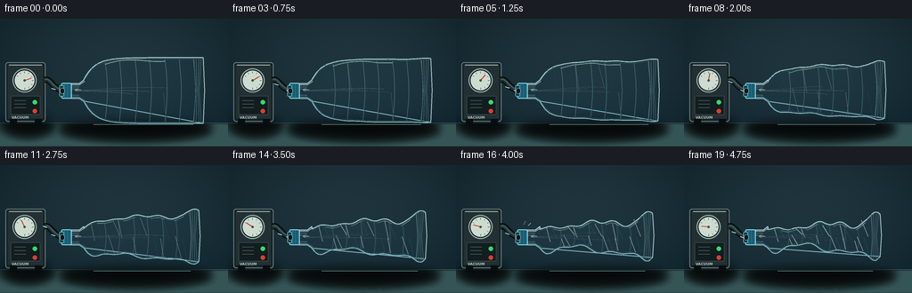
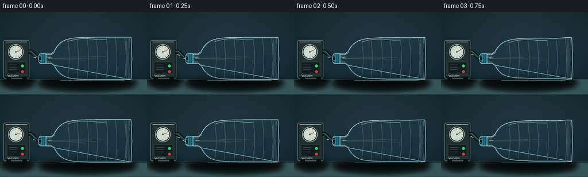
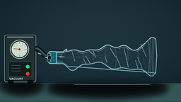

CODING AGENTS AS PIXEL WORLD MODELS
traex/GPT-5.6-Sol · phygen_016
点击播放 · 原生 RGB 像素
逐轮保存的候选
回放视频、检查图与代码变化。
每份候选均可单独播放。实际图片检查记录在下方工具轨迹中。
候选 01播放与检查图
点击播放 · 原生 RGB 像素


展开代码变化
--- 上一保存版本
+++ 本次保存版本
@@ -0,0 +1,275 @@
+from pathlib import Path
+import math
+import numpy as np
+from PIL import Image, ImageDraw, ImageFilter, ImageFont
+import artifact_io
+
+W, H, N = 256, 144, 20
+S = 4
+rng = np.random.default_rng(16016)
+
+
+def scp(points):
+ return [(int(round(x*S)), int(round(y*S))) for x, y in points]
+
+
+def line(draw, points, fill, width=1, joint='curve'):
+ draw.line(scp(points), fill=fill, width=max(1, int(width*S)), joint=joint)
+
+
+def poly(draw, points, fill):
+ draw.polygon(scp(points), fill=fill)
+
+
+def ellipse(draw, box, fill=None, outline=None, width=1):
+ b = tuple(int(round(v*S)) for v in box)
+ draw.ellipse(b, fill=fill, outline=outline, width=max(1, int(width*S)))
+
+
+def rect(draw, box, fill=None, outline=None, width=1, radius=0):
+ b = tuple(int(round(v*S)) for v in box)
+ if radius:
+ draw.rounded_rectangle(b, radius=int(radius*S), fill=fill, outline=outline,
+ width=max(1, int(width*S)))
+ else:
+ draw.rectangle(b, fill=fill, outline=outline, width=max(1, int(width*S)))
+
+
+def bez(draw, p0, p1, p2, p3, fill, width=1, steps=40):
+ pts=[]
+ for k in range(steps+1):
+ z=k/steps; q=1-z
+ pts.append((q**3*p0[0]+3*q*q*z*p1[0]+3*q*z*z*p2[0]+z**3*p3[0],
+ q**3*p0[1]+3*q*q*z*p1[1]+3*q*z*z*p2[1]+z**3*p3[1]))
+ line(draw, pts, fill, width)
+ return pts
+
+
+def profile(progress, frame):
+ # PET outline from shoulder (u=0) to base (u=1). Irregular inward folds
+ xs=[]; top=[]; bot=[]
+ end=228-8*progress
+ vibration = (0.22*math.sin(frame*2.4)) * progress*(1-progress)
+ for j in range(85):
+ u=j/84
+ x=94+(end-94)*u
+ # untouched bottle shoulder ramps into cylindrical body
+ h0=12+25*(1-math.exp(-u*11))
+ # strongly evacuated, folded target profile, with retained shoulder/base structure
+ hf=(7.4 + 4.0*math.exp(-((u-.08)/.11)**2)
+ + 3.8*math.exp(-((u-.52)/.11)**2)
+ + 18.5*math.exp(-((u-.96)/.08)**2)
+ + 2.6*math.sin(5.1*math.pi*u+0.4)**2)
+ # folds do not collapse uniformly
+ local=max(0,min(1, progress*(.90 + .11*math.sin(2*math.pi*u+0.2))))
+ h=(1-local)*h0+local*hf
+ fold=progress**1.3*(2.0*math.sin(5*math.pi*u+.4)+1.25*math.sin(11*math.pi*u+1.3))
+ # centerline buckles mildly while walls implode
+ cy=80.8 + progress*(2.5*math.sin(3.2*math.pi*u+.5)+1.2*math.sin(8.5*math.pi*u)) + vibration
+ top.append((x, cy-h + .40*fold))
+ bot.append((x, cy+h + .52*fold))
+ xs.append(x)
+ return top, bot
+
+
+def draw_background(i):
+ yy,xx=np.mgrid[0:H*S,0:W*S]
+ # cool photographic lab wall gradient, subtle vignette and grain
+ y=yy/(H*S-1); x=xx/(W*S-1)
+ base=np.empty((H*S,W*S,3),dtype=np.float32)
+ base[...,0]=27-7*y
+ base[...,1]=45-5*y
+ base[...,2]=52-3*y
+ glow=np.exp(-(((x-.57)/.55)**2+((y-.40)/.70)**2))*14
+ base += glow[...,None]*np.array([.45,.66,.72])
+ vign=np.clip(((x-.5)**2+(y-.48)**2)*20,0,9)
+ base-=vign[...,None]
+ grain=rng.normal(0,.65,(H*S,W*S,1))
+ base+=grain
+ return Image.fromarray(np.uint8(np.clip(base,0,255)),'RGB').convert('RGBA')
+
+
+def make_frame(i):
+ t=i/(N-1)
+ smooth=t*t*(3-2*t)
+ p=.08*t+.92*smooth
+ im=draw_background(i)
+
+ # distant wall seam and pool of light
+ d=ImageDraw.Draw(im,'RGBA')
+ line(d,[(0,117.5),(256,117.5)],(95,124,128,90),.6)
+ # tabletop gradient overlay
+ poly(d,[(0,118),(256,118),(256,144),(0,144)],(13,27,30,255))
+ for y in range(119,144):
+ a=int(30*(1-(y-119)/30))
+ line(d,[(0,y),(256,y)],(52,84,86,a),1)
+
+ # broad soft shadows
+ sh=Image.new('RGBA',im.size,(0,0,0,0)); sd=ImageDraw.Draw(sh,'RGBA')
+ ellipse(sd,(69,113,235,131),(0,0,0,125))
+ ellipse(sd,(3,108,59,128),(0,0,0,115))
+ sh=sh.filter(ImageFilter.GaussianBlur(5*S)); im=Image.alpha_composite(im,sh)
+ d=ImageDraw.Draw(im,'RGBA')
+
+ # vacuum pump enclosure
+ rect(d,(6,49,51,116),(24,35,39,255),(100,124,126,255),1.1,3)
+ rect(d,(8,51,49,113),(35,48,51,255),(13,21,23,255),.7,2)
+ # metallic top lip
+ line(d,[(10,52),(47,52)],(167,187,184,110),1)
+ # gauge body and glass
+ ellipse(d,(14,56,41,83),(13,23,26,255),(150,176,173,255),1.4)
+ ellipse(d,(16,58,39,81),(206,220,207,255),(55,73,72,255),.7)
+ # gauge ticks
+ cx,cy=27.5,69.5
+ for k in range(9):
+ ang=math.radians(210 + k*30)
+ r1,r2=8.3,10.1
+ line(d,[(cx+r1*math.cos(ang),cy+r1*math.sin(ang)),
+ (cx+r2*math.cos(ang),cy+r2*math.sin(ang))],(41,57,56,230),.6)
+ # needle moves toward high vacuum on left side
+ ang=math.radians(20 + 155*p)
+ line(d,[(cx,cy),(cx+8.3*math.cos(ang),cy-8.3*math.sin(ang))],(196,55,44,255),1)
+ ellipse(d,(26.3,68.3,28.7,70.7),(70,76,72,255))
+ # front controls, vents, readable visual label
+ rect(d,(12,87,45,108),(18,29,32,255),(67,88,89,255),.6,1)
+ for yy0 in (92,96,100): line(d,[(16,yy0),(29,yy0)],(96,119,118,180),.7)
+ ellipse(d,(36,91,42,97),(45,220,111,255),(12,25,22,255),.6)
+ ellipse(d,(36,101,42,107),(213,64,51,255),(12,25,22,255),.6)
+ # tiny PUMP marking
+ try:
+ font=ImageFont.truetype('/usr/share/fonts/truetype/dejavu/DejaVuSans-Bold.ttf',4*S)
+ d.text((13*S,109*S),"VACUUM",font=font,fill=(177,195,190,220))
+ except Exception: pass
+ # feet
+ rect(d,(11,113,19,119),(8,14,15,255),radius=1)
+ rect(d,(39,113,47,119),(8,14,15,255),radius=1)
+
+ # thick flexible hose from pump to bottle, with cyan inner bore highlight
+ # use smooth cubic; endpoint enters the stopper
+ tubepts=bez(d,(50,69),(57,66),(58,80),(73,81),(4,9,11,255),7.2)
+ bez(d,(50,69),(57,66),(58,80),(73,81),(34,52,55,255),4.3)
+ bez(d,(50,68.5),(57,65.5),(58,79.3),(73,80.4),(116,148,148,95),.7)
+
+ # animated suction dashes traveling leftward inside translucent tube
+ # approximated along final section; clear direction arrowheads point to pump
+ phase=(i*.22)%1
+ for q in [(.15+phase)%1,(.56+phase)%1]:
+ # along segment from mouth (73,81) toward pump (50,69)
+ x=73-23*q; y=81-12*q+5*math.sin(math.pi*q)
+ line(d,[(x+2.2,y+.8),(x-2.2,y-.8)],(181,235,236,190),1)
+ # seal/cap collar: hose penetrates center, visibly airtight
+ rect(d,(68.5,72.2,80.5,90.0),(30,104,128,255),(136,217,225,255),1.0,2)
+ for x0 in (71,74,77): line(d,[(x0,73.5),(x0,88.8)],(10,64,84,180),.65)
+ rect(d,(66.5,75.0,71.8,87.5),(16,54,66,255),(118,184,193,255),.8,1)
+ # gasket around hose
+ ellipse(d,(67.2,78.0,72.6,84.5),(7,17,19,255),(139,208,209,255),.7)
+
+ # bottle geometry
+ top,bot=profile(p,i)
+ neck_top=[(79.5,73.0),(89.0,73.0),(94.0,69.0),top[0]]
+ neck_bot=[bot[0],(94.0,93.0),(89.0,89.8),(79.5,89.8)]
+ outline=neck_top+top+list(reversed(bot))+neck_bot
+
+ # clear PET body volume; background remains visible
+ body=Image.new('RGBA',im.size,(0,0,0,0)); bd=ImageDraw.Draw(body,'RGBA')
+ poly(bd,outline,(100,185,199,25))
+ # interior soft glass-like glow concentrated at perimeter
+ # slight center cool tint
+ poly(bd,outline,(66,154,174,10))
+ # main contours
+ line(bd,neck_top+top,(191,230,234,205),1.25)
+ line(bd,bot+neck_bot,(154,212,220,200),1.25)
+ # secondary offset edge gives thin transparent wall impression
+ inner_top=[(x,y+1.7) for x,y in top]
+ inner_bot=[(x,y-1.7) for x,y in bot]
+ line(bd,inner_top,(69,156,173,95),.65)
+ line(bd,inner_bot,(76,167,181,90),.65)
+
+ # shoulder highlights and horizontal neck threading
+ line(bd,[(80,74.5),(89,74.5),(95,70.5)],(230,249,248,175),.75)
+ line(bd,[(80,88.5),(89,88.5),(95,92)],(100,186,200,145),.75)
+ for yy0 in (76.8,79.0,86.0,88.1):
+ line(bd,[(79.2,yy0),(88.7,yy0)],(178,225,230,130),.55)
+
+ # molded vertical ribs. Their shrinking spacing/height makes collapse obvious.
+ end=228-8*p
+ for k,u in enumerate(np.linspace(.18,.92,7)):
+ idx=int(round(u*84)); x=top[idx][0]; yt=top[idx][1]; yb=bot[idx][1]
+ # curved rib represented by bright/dark paired arcs
+ pts=[]
+ for m in range(13):
+ q=m/12
+ bul=math.sin(math.pi*q)*(1.2+1.2*(1-p))
+ pts.append((x+bul,yt+1.8+(yb-yt-3.6)*q))
+ line(bd,pts,(167,220,225,70+int(48*(1-p))),.65)
+ line(bd,[(xx+1.15,yy) for xx,yy in pts],(25,105,126,45+int(35*p)),.5)
+
+ # bright long specular streak on upper wall, fragments as the bottle wrinkles
+ if p < .52:
+ u0,u1=.18,.70
+ ids=range(int(u0*84),int(u1*84))
+ pts=[(top[j][0],top[j][1]+3.1+1.1*math.sin(j*.15)) for j in ids]
+ line(bd,pts,(225,248,246,int(145*(1-.7*p))),1.05)
+ else:
+ for a,b in ((.12,.25),(.35,.46),(.59,.71),(.79,.88)):
+ pts=[]
+ for u in np.linspace(a,b,8):
+ j=int(u*84); pts.append((top[j][0],top[j][1]+2.5))
+ line(bd,pts,(225,247,246,100),.9)
+
+ # crumple creases grow in number/intensity as vacuum rises
+ crease_count=int(2+18*p)
+ for c in range(crease_count):
+ u=.10+.82*((c*.6180339+.07)%1)
+ j=int(u*84); x=top[j][0]; yt=top[j][1]; yb=bot[j][1]; cy=(yt+yb)/2
+ side=-1 if c%2==0 else 1
+ start=(x-6.0, yt+1.1) if side<0 else (x+5.0,yb-1.2)
+ dest=(x+2.0*math.sin(c*2.1), cy+2.5*math.sin(c))
+ col=(223,244,241,45+int(100*p)) if c%3 else (34,104,121,45+int(70*p))
+ line(bd,[start,dest],col,.55+.25*p)
+
+ # molded petaloid/base ridges at far right
+ jt=80
+ xbase=top[jt][0]
+ for off in (-4,-1.5,1.5,4):
+ line(bd,[(xbase+off,top[jt][1]+2),(xbase+off*.5,(top[jt][1]+bot[jt][1])/2),
+ (xbase+off,bot[jt][1]-2)],(177,226,229,95),.6)
+ # base cap edge
+ line(bd,[top[-1],(top[-1][0]+1.5,(top[-1][1]+bot[-1][1])/2),bot[-1]],
+ (206,239,238,195),1.2)
+
+ # animated air-stream wisps within empty bottle, all converging left into the sealed mouth
+ # Strong initially and still visible late, indicating extraction rather than liquid.
+ for w in range(3):
+ alpha=int((68-28*p)*(0.75+0.25*math.sin(i*.8+w)))
+ shift=(i*4.0+w*19)%44
+ x2=187-shift
+ if x2<105: x2+=82
+ yy0=78+w*3.0+math.sin(i*.7+w)*1.5
+ bez(bd,(x2,yy0),(145,yy0-2),(113,80+w),(84,81+w*.2),(210,245,244,max(15,alpha)),.7)
+ # tiny left-facing arrow at neck
+ line(bd,[(91,80),(84,80)],(224,250,249,145),.75)
+ line(bd,[(84,80),(87,78.5)],(224,250,249,145),.75)
+ line(bd,[(84,80),(87,81.5)],(224,250,249,145),.75)
+
+ # subtle blur only for transparent overlays then composite; retain crisp contours
+ im=Image.alpha_composite(im,body)
+ d=ImageDraw.Draw(im,'RGBA')
+
+ # contact glints below bottle and occasional forceful vibration tick near hose
+ line(d,[(105,119),(217-5*p,119)],(129,188,189,35),.7)
+ if 5 <= i <= 16 and i%3==1:
+ line(d,[(76,67),(78,63)],(176,226,226,90),.6)
+ line(d,[(81,68),(84,65)],(176,226,226,75),.6)
+
+ # high-quality downsample
+ im=im.convert('RGB').resize((W,H),Image.Resampling.LANCZOS)
+ return np.asarray(im,dtype=np.uint8)
+
+
+def main():
+ frames=np.stack([make_frame(i) for i in range(N)],axis=0)
+ artifact_io.save(frames,Path(__file__).resolve().parent)
+
+if __name__=='__main__':
+ main()
可观测工具轨迹
实际执行的命令与返回图片。
命令 1exit 0
/bin/bash -lc "cat prompt.txt && printf '\\n---RULES---\\n' && cat GENERATION_RULES.md && printf '\\n---SPEC---\\n' && cat task_spec.json"
命令 2exit 0
/bin/bash -lc "find . -maxdepth 2 -type f -printf '%p\\n' | sort"
命令 3exit 0
/bin/bash -lc 'cat artifact_io.py'
命令 4exit 0
/bin/bash -lc "cat > generate.py <<'PY'
from pathlib import Path
import math
import numpy as np
from PIL import Image, ImageDraw, ImageFilter, ImageFont
import artifact_io
W, H, N = 256, 144, 20
S = 4
rng = np.random.default_rng(16016)
def scp(points):
return [(int(round(x*S)), int(round(y*S))) for x, y in points]
def line(draw, points, fill, width=1, joint='curve'):
draw.line(scp(points), fill=fill, width=max(1, int(width*S)), joint=joint)
def poly(draw, points, fill):
draw.polygon(scp(points), fill=fill)
def ellipse(draw, box, fill=None, outline=None, width=1):
b = tuple(int(round(v*S)) for v in box)
draw.ellipse(b, fill=fill, outline=outline, width=max(1, int(width*S)))
def rect(draw, box, fill=None, outline=None, width=1, radius=0):
b = tuple(int(round(v*S)) for v in box)
if radius:
draw.rounded_rectangle(b, radius=int(radius*S), fill=fill, outline=outline,
width=max(1, int(width*S)))
else:
draw.rectangle(b, fill=fill, outline=outline, width=max(1, int(width*S)))
def bez(draw, p0, p1, p2, p3, fill, width=1, steps=40):
pts=[]
for k in range(steps+1):
z=k/steps; q=1-z
pts.append((q**3*p0[0]+3*q*q*z*p1[0]+3*q*z*z*p2[0]+z**3*p3[0],
q**3*p0[1]+3*q*q*z*p1[1]+3*q*z*z*p2[1]+z**3*p3[1]))
line(draw, pts, fill, width)
return pts
def profile(progress, frame):
# PET outline from shoulder (u=0) to base (u=1). Irregular inward folds
xs=[]; top=[]; bot=[]
end=228-8*progress
vibration = (0.22*math.sin(frame*2.4)) * progress*(1-progress)
for j in range(85):
u=j/84
x=94+(end-94)*u
# untouched bottle shoulder ramps into cylindrical body
h0=12+25*(1-math.exp(-u*11))
# strongly evacuated, folded target profile, with retained shoulder/base structure
hf=(7.4 + 4.0*math.exp(-((u-.08)/.11)**2)
+ 3.8*math.exp(-((u-.52)/.11)**2)
+ 18.5*math.exp(-((u-.96)/.08)**2)
+ 2.6*math.sin(5.1*math.pi*u+0.4)**2)
# folds do not collapse uniformly
local=max(0,min(1, progress*(.90 + .11*math.sin(2*math.pi*u+0.2))))
h=(1-local)*h0+local*hf
fold=progress**1.3*(2.0*math.sin(5*math.pi*u+.4)+1.25*math.sin(11*math.pi*u+1.3))
# centerline buckles mildly while walls implode
cy=80.8 + progress*(2.5*math.sin(3.2*math.pi*u+.5)+1.2*math.sin(8.5*math.pi*u)) + vibration
top.append((x, cy-h + .40*fold))
bot.append((x, cy+h + .52*fold))
xs.append(x)
return top, bot
def draw_background(i):
yy,xx=np.mgrid[0:H*S,0:W*S]
# cool photographic lab wall gradient, subtle vignette and grain
y=yy/(H*S-1); x=xx/(W*S-1)
base=np.empty((H*S,W*S,3),dtype=np.float32)
base[...,0]=27-7*y
base[...,1]=45-5*y
base[...,2]=52-3*y
glow=np.exp(-(((x-.57)/.55)**2+((y-.40)/.70)**2))*14
base += glow[...,None]*np.array([.45,.66,.72])
vign=np.clip(((x-.5)**2+(y-.48)**2)*20,0,9)
base-=vign[...,None]
grain=rng.normal(0,.65,(H*S,W*S,1))
base+=grain
return Image.fromarray(np.uint8(np.clip(base,0,255)),'RGB').convert('RGBA')
def make_frame(i):
t=i/(N-1)
smooth=t*t*(3-2*t)
p=.08*t+.92*smooth
im=draw_background(i)
# distant wall seam and pool of light
d=ImageDraw.Draw(im,'RGBA')
line(d,[(0,117.5),(256,117.5)],(95,124,128,90),.6)
# tabletop gradient overlay
poly(d,[(0,118),(256,118),(256,144),(0,144)],(13,27,30,255))
for y in range(119,144):
a=int(30*(1-(y-119)/30))
line(d,[(0,y),(256,y)],(52,84,86,a),1)
# broad soft shadows
sh=Image.new('RGBA',im.size,(0,0,0,0)); sd=ImageDraw.Draw(sh,'RGBA')
ellipse(sd,(69,113,235,131),(0,0,0,125))
ellipse(sd,(3,108,59,128),(0,0,0,115))
sh=sh.filter(ImageFilter.GaussianBlur(5*S)); im=Image.alpha_composite(im,sh)
d=ImageDraw.Draw(im,'RGBA')
# vacuum pump enclosure
rect(d,(6,49,51,116),(24,35,39,255),(100,124,126,255),1.1,3)
rect(d,(8,51,49,113),(35,48,51,255),(13,21,23,255),.7,2)
# metallic top lip
line(d,[(10,52),(47,52)],(167,187,184,110),1)
# gauge body and glass
ellipse(d,(14,56,41,83),(13,23,26,255),(150,176,173,255),1.4)
ellipse(d,(16,58,39,81),(206,220,207,255),(55,73,72,255),.7)
# gauge ticks
cx,cy=27.5,69.5
for k in range(9):
ang=math.radians(210 + k*30)
r1,r2=8.3,10.1
line(d,[(cx+r1*math.cos(ang),cy+r1*math.sin(ang)),
(cx+r2*math.cos(ang),cy+r2*math.sin(ang))],(41,57,56,230),.6)
# needle moves toward high vacuum on left side
ang=math.radians(20 + 155*p)
line(d,[(cx,cy),(cx+8.3*math.cos(ang),cy-8.3*math.sin(ang))],(196,55,44,255),1)
ellipse(d,(26.3,68.3,28.7,70.7),(70,76,72,255))
# front controls, vents, readable visual label
rect(d,(12,87,45,108),(18,29,32,255),(67,88,89,255),.6,1)
for yy0 in (92,96,100): line(d,[(16,yy0),(29,yy0)],(96,119,118,180),.7)
ellipse(d,(36,91,42,97),(45,220,111,255),(12,25,22,255),.6)
ellipse(d,(36,101,42,107),(213,64,51,255),(12,25,22,255),.6)
# tiny PUMP marking
try:
font=ImageFont.truetype('/usr/share/fonts/truetype/dejavu/DejaVuSans-Bold.ttf',4*S)
d.text((13*S,109*S),\"VACUUM\",font=font,fill=(177,195,190,220))
except Exception: pass
# feet
rect(d,(11,113,19,119),(8,14,15,255),radius=1)
rect(d,(39,113,47,119),(8,14,15,255),radius=1)
# thick flexible hose from pump to bottle, with cyan inner bore highlight
# use smooth cubic; endpoint enters the stopper
tubepts=bez(d,(50,69),(57,66),(58,80),(73,81),(4,9,11,255),7.2)
bez(d,(50,69),(57,66),(58,80),(73,81),(34,52,55,255),4.3)
bez(d,(50,68.5),(57,65.5),(58,79.3),(73,80.4),(116,148,148,95),.7)
# animated suction dashes traveling leftward inside translucent tube
# approximated along final section; clear direction arrowheads point to pump
phase=(i*.22)%1
for q in [(.15+phase)%1,(.56+phase)%1]:
# along segment from mouth (73,81) toward pump (50,69)
x=73-23*q; y=81-12*q+5*math.sin(math.pi*q)
line(d,[(x+2.2,y+.8),(x-2.2,y-.8)],(181,235,236,190),1)
# seal/cap collar: hose penetrates center, visibly airtight
rect(d,(68.5,72.2,80.5,90.0),(30,104,128,255),(136,217,225,255),1.0,2)
for x0 in (71,74,77): line(d,[(x0,73.5),(x0,88.8)],(10,64,84,180),.65)
rect(d,(66.5,75.0,71.8,87.5),(16,54,66,255),(118,184,193,255),.8,1)
# gasket around hose
ellipse(d,(67.2,78.0,72.6,84.5),(7,17,19,255),(139,208,209,255),.7)
# bottle geometry
top,bot=profile(p,i)
neck_top=[(79.5,73.0),(89.0,73.0),(94.0,69.0),top[0]]
neck_bot=[bot[0],(94.0,93.0),(89.0,89.8),(79.5,89.8)]
outline=neck_top+top+list(reversed(bot))+neck_bot
# clear PET body volume; background remains visible
body=Image.new('RGBA',im.size,(0,0,0,0)); bd=ImageDraw.Draw(body,'RGBA')
poly(bd,outline,(100,185,199,25))
# interior soft glass-like glow concentrated at perimeter
# slight center cool tint
poly(bd,outline,(66,154,174,10))
# main contours
line(bd,neck_top+top,(191,230,234,205),1.25)
line(bd,bot+neck_bot,(154,212,220,200),1.25)
# secondary offset edge gives thin transparent wall impression
inner_top=[(x,y+1.7) for x,y in top]
inner_bot=[(x,y-1.7) for x,y in bot]
line(bd,inner_top,(69,156,173,95),.65)
line(bd,inner_bot,(76,167,181,90),.65)
# shoulder highlights and horizontal neck threading
line(bd,[(80,74.5),(89,74.5),(95,70.5)],(230,249,248,175),.75)
line(bd,[(80,88.5),(89,88.5),(95,92)],(100,186,200,145),.75)
for yy0 in (76.8,79.0,86.0,88.1):
line(bd,[(79.2,yy0),(88.7,yy0)],(178,225,230,130),.55)
# molded vertical ribs. Their shrinking spacing/height makes collapse obvious.
end=228-8*p
for k,u in enumerate(np.linspace(.18,.92,7)):
idx=int(round(u*84)); x=top[idx][0]; yt=top[idx][1]; yb=bot[idx][1]
# curved rib represented by bright/dark paired arcs
pts=[]
for m in range(13):
q=m/12
bul=math.sin(math.pi*q)*(1.2+1.2*(1-p))
pts.append((x+bul,yt+1.8+(yb-yt-3.6)*q))
line(bd,pts,(167,220,225,70+int(48*(1-p))),.65)
line(bd,[(xx+1.15,yy) for xx,yy in pts],(25,105,126,45+int(35*p)),.5)
# bright long specular streak on upper wall, fragments as the bottle wrinkles
if p < .52:
u0,u1=.18,.70
ids=range(int(u0*84),int(u1*84))
pts=[(top[j][0],top[j][1]+3.1+1.1*math.sin(j*.15)) for j in ids]
line(bd,pts,(225,248,246,int(145*(1-.7*p))),1.05)
else:
for a,b in ((.12,.25),(.35,.46),(.59,.71),(.79,.88)):
pts=[]
for u in np.linspace(a,b,8):
j=int(u*84); pts.append((top[j][0],top[j][1]+2.5))
line(bd,pts,(225,247,246,100),.9)
# crumple creases grow in number/intensity as vacuum rises
crease_count=int(2+18*p)
for c in range(crease_count):
u=.10+.82*((c*.6180339+.07)%1)
j=int(u*84); x=top[j][0]; yt=top[j][1]; yb=bot[j][1]; cy=(yt+yb)/2
side=-1 if c%2==0 else 1
start=(x-6.0, yt+1.1) if side<0 else (x+5.0,yb-1.2)
dest=(x+2.0*math.sin(c*2.1), cy+2.5*math.sin(c))
col=(223,244,241,45+int(100*p)) if c%3 else (34,104,121,45+int(70*p))
line(bd,[start,dest],col,.55+.25*p)
# molded petaloid/base ridges at far right
jt=80
xbase=top[jt][0]
for off in (-4,-1.5,1.5,4):
line(bd,[(xbase+off,top[jt][1]+2),(xbase+off*.5,(top[jt][1]+bot[jt][1])/2),
(xbase+off,bot[jt][1]-2)],(177,226,229,95),.6)
# base cap edge
line(bd,[top[-1],(top[-1][0]+1.5,(top[-1][1]+bot[-1][1])/2),bot[-1]],
(206,239,238,195),1.2)
# animated air-stream wisps within empty bottle, all converging left into the sealed mouth
# Strong initially and still visible late, indicating extraction rather than liquid.
for w in range(3):
alpha=int((68-28*p)*(0.75+0.25*math.sin(i*.8+w)))
shift=(i*4.0+w*19)%44
x2=187-shift
if x2<105: x2+=82
yy0=78+w*3.0+math.sin(i*.7+w)*1.5
bez(bd,(x2,yy0),(145,yy0-2),(113,80+w),(84,81+w*.2),(210,245,244,max(15,alpha)),.7)
# tiny left-facing arrow at neck
line(bd,[(91,80),(84,80)],(224,250,249,145),.75)
line(bd,[(84,80),(87,78.5)],(224,250,249,145),.75)
line(bd,[(84,80),(87,81.5)],(224,250,249,145),.75)
# subtle blur only for transparent overlays then composite; retain crisp contours
im=Image.alpha_composite(im,body)
d=ImageDraw.Draw(im,'RGBA')
# contact glints below bottle and occasional forceful vibration tick near hose
line(d,[(105,119),(217-5*p,119)],(129,188,189,35),.7)
if 5 <= i <= 16 and i%3==1:
line(d,[(76,67),(78,63)],(176,226,226,90),.6)
line(d,[(81,68),(84,65)],(176,226,226,75),.6)
# high-quality downsample
im=im.convert('RGB').resize((W,H),Image.Resampling.LANCZOS)
return np.asarray(im,dtype=np.uint8)
def main():
frames=np.stack([make_frame(i) for i in range(N)],axis=0)
artifact_io.save(frames,Path(__file__).resolve().parent)
if __name__=='__main__':
main()
PY
python generate.py
ls -lh pixels.npz inspection.png frames/00.png frames/19.png"视觉工具实际返回图片 1

视觉工具实际返回图片 2

保存候选 1 份；完成命令 4 次；可验证图片返回 2 张。原始 API 响应与完整日志保留在本地。